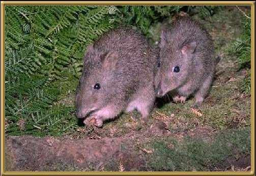

These animals have powerful forearms and long-clawed forefeet. When moving fast they tend to hop on their rear legs, but when moving slowly they move more like a rabbit. They are nocturnal animals, and found in isolated pockets down the lower half of eastern mainland Australia and Tasmania. Although not common, they are considered to be probably secure.
Photographer: Unknown